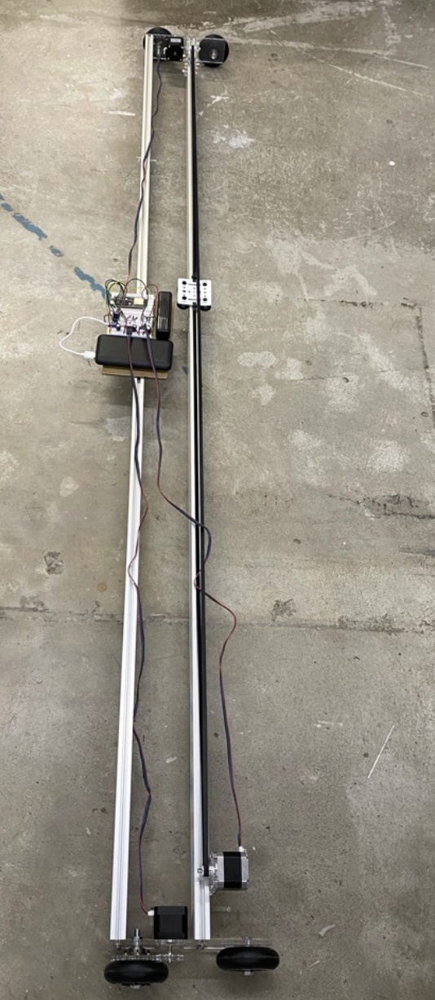
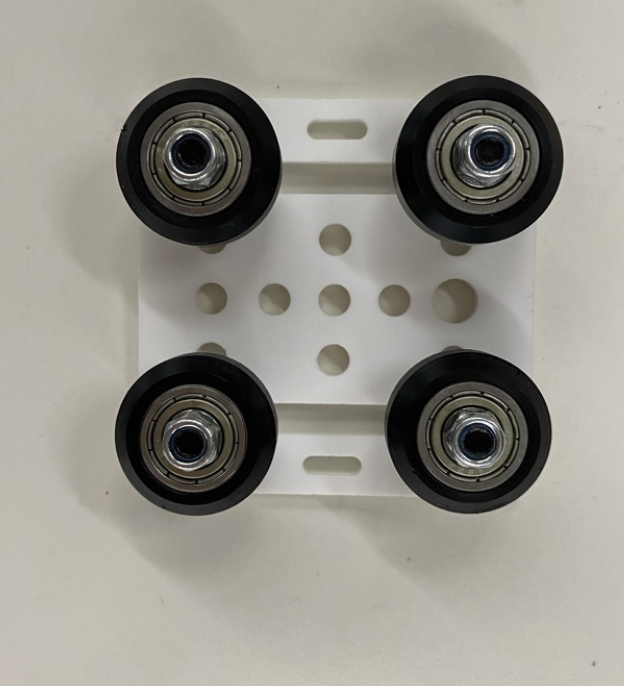
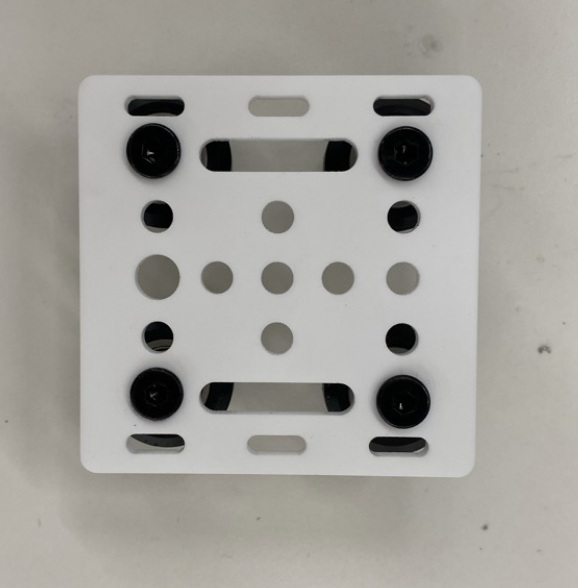

For our machine building probject, we split our group up into the software, the hardware, and the end effector teams. I ended up helping out but was placed on the hardware team as I had less experience there and thus more to learn. We began with some pretty lofty ideas of painting in the sky with light but were quickly brought back down to reality. We ended up basically building a design similar to that of nathans but which was much wider in order to accomodate the larger circle requirement. We ended up building the body out of two 2 meter 30 width vslot bars. We used the laser cutter to fashion acrylic mounting plates for the stepper motors and to cut some gears and a gantry plate.    I think it would have been better to get the hardware done faster as intergration with the software ended up taking a really long time. The lesson learned is that co-development side by side is probably better than just huilding one aspect followed by the other in sequence.